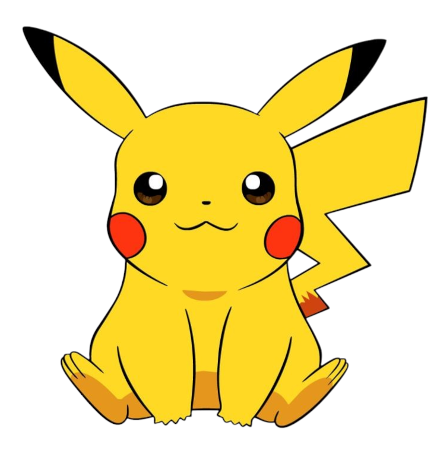
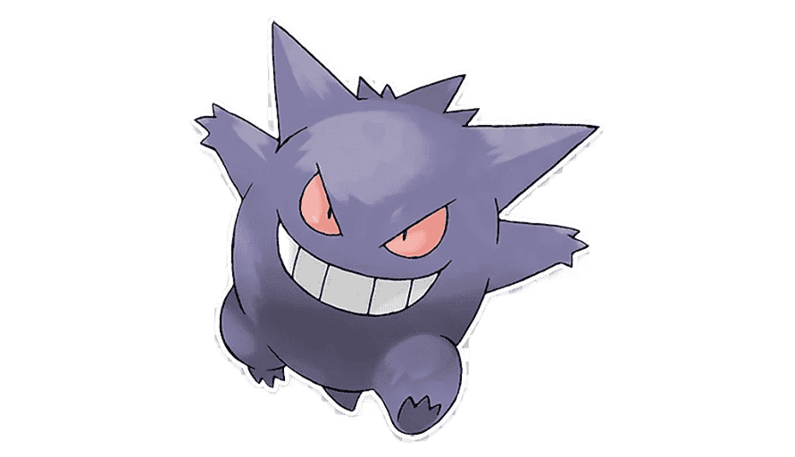

Curiosidades
Aqui vai algumas curiosidades dos pokémons mais populares da primeira geração

- Tipo: Fogo/Voador (apesar de parecer um dragão, só ganha o tipo Dragão em formas especiais)
- Não obedeceu o Ash no início: No anime, o Charizard do Ash se recusava a obedecer por se achar mais forte que ele — só passou a obedecer depois de ver o Ash arriscar a vida por ele
- Mega Evoluções diferentes: Charizard é um dos poucos Pokémon com duas Mega Evoluções — Mega Charizard X (Fogo/Dragão) e Mega Charizard Y (Fogo/Voador), exclusivas de versões diferentes dos jogos
- Inspirado em dragões ocidentais: Mesmo não sendo do tipo Dragão, seu design foi inspirado em dragões clássicos das lendas europeias
- Popularidade enorme: Charizard é um dos Pokémon mais populares de todos os tempos — tanto que seu card raro do TCG (Base Set) é um dos mais valiosos até hoje

- Mascote oficial da franquia: Pikachu é o rosto oficial do mundo Pokémon e um dos personagens mais reconhecidos da cultura pop global
- Baseado em um roedor: Seu design foi inspirado em um esquilo, mesmo sendo classificado como um "rato elétrico" nos jogos
- Tem uma linguagem própria no anime: No anime, a dubladora japonesa Ikue Ōtani faz a voz do Pikachu desde o início — e cada "Pika" e "Chu" tem significados diferentes entre os Pokémon
- Ash se recusou a evoluí-lo: Em um episódio clássico, Ash recebeu uma Pedra do Trovão para evoluí-lo em Raichu, mas Pikachu preferiu ficar como estava, valorizando sua amizade com Ash
- Pikachu já teve "gordura extra": Nas primeiras gerações, Pikachu era desenhado bem mais gordinho. Com o tempo, seu design foi ficando mais esbelto

- Primeiro Pokémon Fantasma registrado: Gengar é o primeiro Pokémon do tipo Fantasma na Pokédex (número #094), e um dos mais icônicos desse tipo
- Sombra viva: Seu conceito é baseado em uma sombra viva — inclusive, a Pokédex sugere que ele pode ser a sombra de um outro Pokémon, como o Clefable (uma teoria famosa entre fãs)
- Sorriso sinistro: Gengar está sempre com um sorriso malicioso, refletindo sua natureza travessa e brincalhona — ele adora assustar pessoas e outros Pokémon
- Ganha forma Gigantamax: Em Pokémon Sword e Shield, Gengar recebeu uma forma Gigantamax onde sua boca se abre como um portal gigante para outra dimensão
- Pode baixar a temperatura: Segundo a Pokédex, quando Gengar aparece, a temperatura do ambiente pode cair repentinamente — como um verdadeiro espírito maligno

- O dorminhoco da franquia: Snorlax é conhecido por dormir quase o tempo todo. Ele só acorda para comer... e come mais de 400 kg de comida por dia!
- Bloqueia caminhos nos jogos: Nas primeiras gerações, Snorlax aparece deitado no meio do caminho, forçando os jogadores a usar a Poké Flauta para acordá-lo e enfrentá-lo
- Inspiração real: O criador de Snorlax, Ken Sugimori, se inspirou em um colega de trabalho da Game Freak, conhecido por ser grandalhão e adorar dormir
- Extremamente resistente: Apesar da aparência preguiçosa, Snorlax tem altíssimo HP e ataque, sendo um verdadeiro tanque em batalhas
- Forma Gigantamax: Em Sword e Shield, Snorlax ganhou uma forma Gigantamax com uma floresta crescendo na barriga — como se tivesse dormido tanto que a natureza cresceu sobre ele!